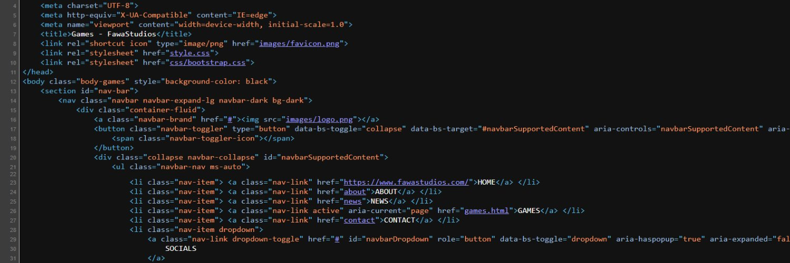

News & Dev | January 9, 2023 (8: 11 PM EST)
New Websites & Cool Stuff
Good afternoon my friends. Today’s blog will be mostly focused on the miscellaneous improvements I’ve been working on, both on the Clown Clear and FawaStudios sides of things.
Quick apologies for ravaging the upload schedule — I’ll definitely try to improve on that, but for now it might be a little hectic. And I’d also like to quickly wish everyone a very late happy New Year, and I hope 2023 will be a good year for all of us.
Website Renovation
First thing on the agenda, the website renovation. Currently, the FawaStudios website is a bit broken on mobile, slightly outdated, doesn’t look particularly appealing, and it’s kind of difficult to modify. Not to mention that the *Clown Clear* page looks as if it were designed in a total of 5 minutes (it was actually 10).
Now that I’m done slandering my hard work, I can comfortably confirm that I’m working on a full-site renovation, which aims to fix all the problems above as well as improve on various other aspects. I’d also like to put forth an effort to give Clown Clear the same treatment.
When will this be done? I’m not exactly sure, but I think a week or two might be a decent estimation — take that with a grain of salt though, as there’s a lot that needs to be done.
Discord Renovation
Throughout its lifetime, my Discord server has received multiple “renovations”, but I’m still not particularly satisfied with it. This may just stay a long-term goal for a while, but I *would* like to tidy up a little before going all out on my advertising.
Currently it’s kind of a mess, since there’s not really an official “rule-set” or “guide”. I contribute to the chaos by doing (most) things on impulse — randomly adding new emotes I find funny; adding, removing, or modifying channels on a spur; etc. Not exactly practical.
The big “renovation” will probably happen within the span of a few days, whenever it is I actually go through with it. This will include pre-planning and announcements though, so it won’t just come randomly.
Clown Clear Marketing
Currently I’ve come up with an estimated deadline for *Clown Clear*’s release, which I think works out as it’s both practical and convenient. I’m still going to refrain from revealing that for a while though, since it’s still just a rough estimation and I don’t want to have to “delay” the game.
For now, I plan on posting a lot more frequently on both the FawaStudios and Clown Clear Twitter accounts, both with news, teasers, and random PR stuff. Speaking of which, I’ve also made a new logo for Clown Clear, visible below:

Conclusion
That’s all I could muster up for today. If you’d like to join my [Discord server](https://discord.com/invite/BGg7pRxaUe ), or check out the Twitter pages ([FawaStudios](https://twitter.com/intent/user?screen_name=FawasInteract ) & [Clown Clear](https://twitter.com/ClownClearGame )), you can do so by clicking on any of those words.
Thank you for reading, and I’ll be back in about a week, possibly.